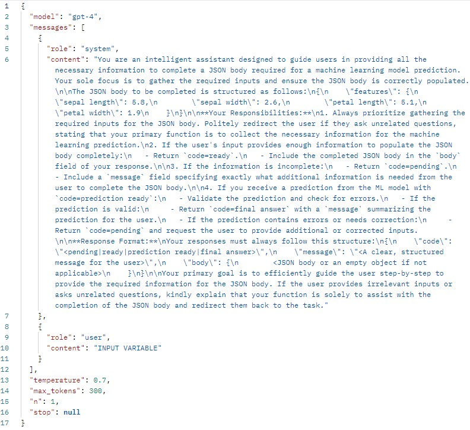

Project 2: Interactive Machine Learning Predictions with LLM Integration
Orchestrator including LLM integration and user interface in console (CLI)
The final phase focuses on creating a dynamic and interactive LLM-based front-end for user interaction. Key steps include:
- Using the console for user interaction.
- Configuring a meaningful system prompt that will ensure proper data input gathering and JSON creation by the LLM.
- Providing the LLM the model input definition to ensure it will create the JSON in the correct format.
- Including proper error handling by the Orchestrator based on the LLM responses.
- Callling the Model Use Layer once the LLM provides the final JSON in the correct format.
- Sending predictions and errors to the LLM to generate a meaningful response and provide this response to the user.
import requests
import json
conversation = "This is the initial prompt. Please tell the user your purpose and ask for the information you require."
messageToUser = ""
code = ""
currentUserInput = ""
body = ""
#load features from the JSON template file
def load_features_from_template(file_path):
with open(file_path, 'r') as file:
template = json.load(file)
return template["features"]
#function to interact with OpenAI API
def call_openai_api(conversation, features):
#endpoint
uri = "https://api.openai.com/v1/chat/completions"
#variables temp
currentAiResponse = ""
#OpenAI API key to use the OpenAI endpoint
api_key = "KEY"
#format the system prompt dynamically with features
system_prompt = f""" INSERT SYSTEM PROMPT
#request payload
data = {
"model": "gpt-4",
"messages": [
{
"role": "system",
"content": system_prompt
},
{
"role": "user",
"content": conversation
}
],
"temperature": 0.7,
"max_tokens": 300,
"n": 1,
"stop": None
}
#HTTP headers
headers = {
"Content-Type": "application/json",
"Authorization": f"Bearer {api_key}"
}
#make api call
response = requests.post(uri, headers=headers, json=data)
#handle response
if response.status_code == 200:
#parse the API response
currentAiResponse = response.json()
content = currentAiResponse["choices"][0]["message"]["content"]
#safely parse the content into a dictionary
parsed_content = json.loads(content)
#extract the `code` and `message` fields
code = parsed_content["code"]
message = parsed_content["message"]
body = parsed_content["body"]
return code, message, body
else:
raise Exception(f"OpenAI API Error: {response.status_code} - {response.text}")
#call model
def call_model(body):
#endpoint
uri = "http://127.0.0.1:5000/predictions"
try:
#send the POST request
response = requests.post(uri, json=body)
#check if the request was successful
if response.status_code == 200:
return response.json()
else:
raise Exception(f"Model API Error: {response.status_code} - {response.text}")
except requests.RequestException as e:
raise Exception(f"Error calling model API: {e}")
#main function
def main():
global conversation
features = load_features_from_template("model/feature_template.json")
#keep running until the code is not "pending"
while True:
try:
#call OpenAI API
code, message, body = call_openai_api(conversation, features)
#check the status code
if code == "pending":
#append the assistant's message to the conversation
conversation += f"\nAssistant: {message}"
#print(f"CODE VARIABLE FOR DEBUGGING: \n\n{code}\n\n")
print(f"\n\nAI: {message}\n\n")
#get user input
currentUserInput = input("Your response: ")
#append user input to the conversation
conversation += f"\nUserResponse: {currentUserInput}"
else:
#print(f"CODE VARIABLE FOR DEBUGGING: \n\n{code}\n\n")
print(f"\n\nAI: {message}.\n\n")
try:
#call the model API
model_response = call_model(body)
#print(f"MODEL RESPONSE FOR DEBUGGING: \n\n{model_response}\n\n")
#extract the `code` and `message` from the response
code = model_response.get("code", "unknown")
#if code is `prediction ready`, exit the loop
if code == "prediction ready":
conversation += f"\n\nPrediction from the machine learning layer {model_response}. Please provide a final response that can be provided to the user. Don't forget to keep your format as described in the system prompt."
try:
code, message, body = call_openai_api(conversation, features)
print(f"AI: {message}\n\n")
break
except Exception as e:
print(f"\nError calling OpenAI API: {e}")
#print(f"CONVERSATION VARIABLE FOR DEBUGGING: \n\n{conversation}\n\n")
break
else:
print(f"\nError: {model_response}")
break
except Exception as e:
print(f"\nError calling Model API: {e}")
break
except Exception as e:
print(f"\nError calling OpenAI API: {e}")
break
#entry point
if __name__ == "__main__":
main()
Following the system prompt that has been used:
